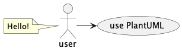

Warning
This draft documentation is under development.
PlantUML¶
PlantUML is a tool widely used by software analysts, engineers, developers, and others to create various types of graphic diagrams: UML (Sequence, Usecase, Class, Object, Activity, and other) and non-UML.
Setup¶
PlantUML is a Java package that you need to install on your computer. The installation process depends on the operating system installed on your computer. You can find the most convenient way at the PlantUML official site. This package requires the Graphviz package, so you need to install it too if you didn’t do it yet. For example, on Mac, you can use Homebrew package manager:
$ brew install graphviz
$ brew install plantuml
The sphinxcontrib-plantuml Python package is available in the Github
sphinx-contrib repository.
Use the following steps to set it up:
Install the
sphinxcontrib-plantumlextension:$ pip install sphinxcontrib-plantuml
Add this extension to the
conf.pyfile:extensions = [ 'sphinx.ext.graphviz', 'sphinxcontrib.plantuml', ]
Note
If you don’t use Graphviz directly in your files, you can remove the corresponding line from the list of extensions.
Try the updated environment by adding the following simplest test directive to a reST file:
.. uml:: @startuml user -> (use PlantUML) note left of user Hello! end note @endumlBuild the documentation as you usually do. You will get the following graph:

PlantUML generates a new PNG file that Sphinx stores in the
build/dirhtml/_imagesfolder with a randomly generated name similar toplantuml-a0f5e2ce818b07c47f92d6d1c1e2c04993fe35b9.png.
Diagrams¶
There are the following types of diagrams that were used in this documentation: